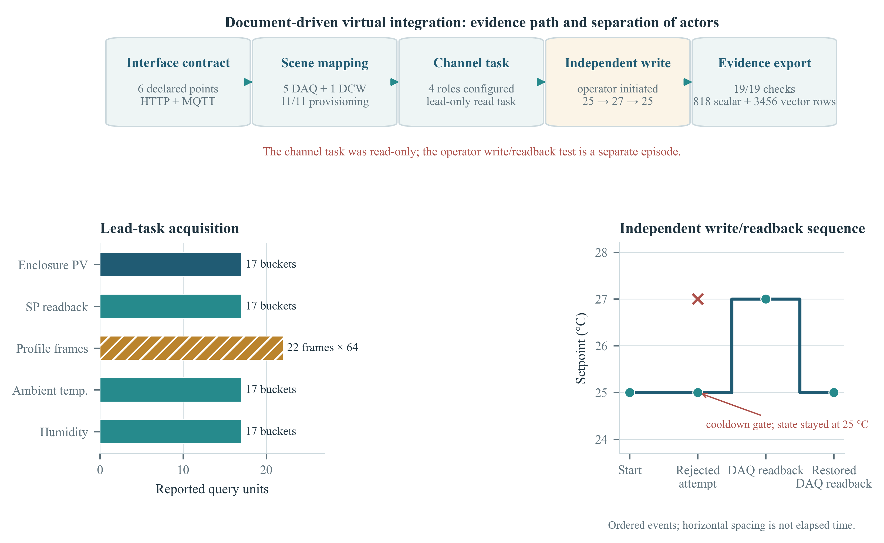

最新实验结果复核与论文证据报告
最新的真实 Harness 任务是 03:37 的 OMP Channel 运行，配置记录为 USTC/DeepSeek Flash；它调用了四类工具，但总体验收 10/13，任务仍为 WORKING。较早的文档驱动模拟线运行完成了配置、读取和导出验证，但其写入是独立管理员验收，不是 Agent 写入。
最新任务未收口文档驱动接入：限定范围通过P12：工作流/证据完整性失败A1/A2：未运行审阅结论
文档到场景配置、HTTP/MQTT 接入、标量与 64 点向量读取、Channel lead 查询任务、CSV/向量导出一致性，以及独立虚拟 DCW 写后 DAQ 读回。
四 Agent 协作完成控制、Agent 发起的 27→25 写入、审批门消融、模型/Harness 因果比较、工艺优化收益、实体工厂安全或上线性能。
一项更晚的 OMP 配置任务被记录为 USTC/DeepSeek Flash，但包中没有运行时 Provider/Model 回读；因此只称为“配置/记录为”，不视为已完成模型身份核验。不同批次的任务、写入和测试计数不合并。
最新系统回归测试结果（按阶段）
以下是 10/31 报告留存的 T0–T4 结果；软件契约测试与模拟工艺运行分开统计。通过项仅代表所列检查，不外推到未运行的完整功能矩阵。
| 阶段 | 执行与结果 | 判读 |
|---|---|---|
| T0 · 静态门禁 | lint 修复后通过；typecheck、docs:check、i18n:check、readme:lint 均通过。首轮曾发现 5 个 lint 错误，已修复并复跑。 | 完成 |
| T1 · 单元与接口契约 | 915 tests：913 pass、0 fail、2 skipped；MCP 14/14；plugin lifecycle 22/22；SDK surface PASS；twin-provider 5/5；skills 147/147。 | 完成 |
| T2 · 核心闭环 | 隔离线治理 44/44；文档驱动虚拟验证完成供给、只读任务、独立写读回和导出核验。其他高负载本体/优化器/UI/模型套件本轮未运行。 | 限定覆盖 |
| T3 · API 回归 | api-live 未获合格运行：脚本要求 fresh-instance 注册，既有 3300 服务注册已关闭；其他 T3 本轮未跑。 | 前置不满足 |
| T4 · 插件与工具面 | 11 个插件，0 个 reported failures；126 个工具均 available。 | 完成 |
该矩阵说明本轮静态、契约、治理和插件工具面检查的状态；不等于完整系统回归全部通过，也不是统计性能实验。
实验步骤与观测

| 阶段 | 执行情况 | 结果和证据边界 |
|---|---|---|
| 1 · 接口契约 | 六个点位：HTTP 箱体温度 PV/SP/SP 回读/64 点壁厚向量；MQTT 环境温度/湿度。 | 本地虚拟设备，仅 loopback；不是厂家 PLC 文档。 |
| 2 · 生成配置 | 从接口说明生成 blueprint 与 provision；创建新 line、5 DAQ、1 DCW、产品和配方；11/11 供给检查通过、跨线冲突 0。 | 不等同任意工业场景自动零配置；原报告修正了两个 MQTT 节点的采样周期偏差。 |
| 3 · 建立协作面 | Channel 配置 lead + 3 workers，四个成员的适配器字段均为 OMP；激活记录只证明 lead 已 wired。 | 模型身份未留存；没有 worker 子任务派发证据。 |
| 4 · 执行 Agent 任务 | 一个 lead 的只读任务 COMPLETED/100；历史含工具调用和最终交付，覆盖 4 个 scalar 查询及 64 点向量读取。 | 没有通过该任务执行写入。工作流有一次参数校验错误后按要求参数重试；不作为调用成功率估计。 |
| 5 · 独立写读回 | 管理员/验收控制器独立发起 SP=27 与恢复 25；独立 DAQ 分别观测到 27 与 25。较早一次请求被 60 s 冷却拦截。 | HTTP POST 的回显不算设备回读；两次 DAQ 值是 readback evidence。没有 approvalId/taskId/Agent driver 事件关联。 |
| 6 · 导出验证 | 19/19 manifest/表头/行数/向量形状/值域检查通过。 | 4 个 scalar CSV 共 818 行，向量 CSV 为 54 帧 × 64 点 = 3,456 行；启动期有状态为 offline 的数据行，完整性检查不等于全行有效。 |
导出 CSV 核验
原始 CSV 从导出任务的运行目录复制到 Supplementary File S5 Evidence；下表由这些文件重新计数。标量导出行数与平台查询使用的降采样 bucket 数不同，两者不可相加。
| 文件 | 导出行数 | 最小 | 最大 | 行状态 |
|---|---|---|---|---|
| nodes/dn-2441bc04.csv | 134 | 24.5000 | 25.5000 | offline=2, ok=132 |
| nodes/dn-2a0acb1f.csv | 275 | 50.0000 | 60.0000 | offline=2, ok=273 |
| nodes/dn-970e00ea.csv | 275 | 20.5000 | 23.5000 | offline=2, ok=273 |
| nodes/dn-ae545180.csv | 134 | 25.0000 | 27.0000 | offline=2, ok=132 |
| frames/dn-e4934f70.csv | 3456 | 2.4750 | 2.5250 | vector data |
共计：818 标量行，3456 向量点；在 scalar CSV 中计得 8 行标为 offline。19/19 检查核验的是导出契约，不把 offline 行自动解释成有效观测。
不同批次的证据矩阵
| 运行 | 实测结果 | 审计分类 | 可支持的结论 |
|---|---|---|---|
| 10/31 03:37 · OMP / USTC-DeepSeek Flash 配置任务 | 10/13；daq_query、daq_export、diag_run、kb_agent 被真实调用；50 个 DAQ 点；任务 WORKING；0 审批卡。 | 未完成 | 支持一次工具面/后端调用探索；不支持任务完成、治理写入或 A2 模型比较。 |
| 10/31 01:41 · 文档驱动 HTTP/MQTT 模拟线 | 11/11 供给；5/5 acquisition streams；只读 lead task COMPLETED；19/19 导出；独立管理员写读回 27/25。 | 限定范围通过 | 接口映射、读取、导出与独立模拟写读回。不是四 Agent 控制闭环。 |
| 10/30 · OMP/Qwen 真实模型记录 | R3 pending 时 SP=195；脚本批准后 SP=198。R4 写入 SP=200.5；JSON 的 PV=199.45。R2 任务取消且返回数字不匹配。 | 部分有效 | R3/R4 支持一次模型参与的模拟器写入路径；R2 原 PASS 判据不可靠，查询结果排除。 |
| 10/30 · PIPELINE P12 AgentTeam | 资格 PASS；workflow FAIL；evidence integrity FAIL；CANCELED；0 个 verified approvals、0 个 accepted DCW writes；run ended on stale/future DAQ sample. | 不构成完整 episode | 说明完整 AgentTeam 任务和证据关联尚未通过。 |
| 10/29 · 五协议确定性矩阵 | Modbus TCP/RTU、OPC UA、MQTT、HTTP；52 个 acquisition samples；24/24 越界探针被拒绝。LLM 关闭。 | 独立组件证据 | 只支持该次仿真协议/护栏覆盖；不能与最新 Channel run 合并。 |
| 路由状态读回 fixture | 注册任务 route 与 direct REST 两场景共 4 个设定值转换均有独立状态读回；使用合成管理员批准。 | 独立路由检查 | 支持状态转换记录，不支持 Agent 决策或写后工艺响应。 |
| 9/28 四场景脚本任务 | 注塑 31.296→32.36 g；BOPET 28.03→25.30 μm；退火 134.9→99.5 HV；污水 DO 0.194→3.54 mg/L，均落入各自报告窗口。 | 单次轨迹 | 每场景一个脚本控制轨迹；不作基线比较或重复试验统计。 |
| A1/A2 预注册实验 | runner 未实现；approval-only bypass 未资格化；四个 harness × model 组合未全部通过预检。 | NOT-RUN | 无审批门差异或 Harness/模型效应可以报告。 |
模型运行证据纠偏
最新 DeepSeek-configured episode 的插件面检查和复用产线启动检查失败，任务没有到终态。P12 的资格门通过，但 actor/task/tool 关联和团队派发/工作流门未通过。完整记录均保留在报告和 S5 证据包中，不将失败项从总体状态中隐藏。
论文证据是否充足
| 论文主张 | 当前证据 | 判定 | 措辞建议 |
|---|---|---|---|
| 配置异构场景并统一采集 | 两种协议的最新文档驱动线；另有五协议确定性矩阵及多场景历史模拟。 | 有限支持 | “在所测模拟配置中完成映射和数据访问”。 |
| 真实 Agent 任务使用数据工具 | 一次 Channel lead 只读任务完成；较晚 DeepSeek-configured task 调用了四类工具但未收口。 | 有限支持 | 明确单次配置、身份留存缺口和任务未完成记录。 |
| Agent 受治理参数写入 | 单次 OMP/Qwen 的 pending→scripted approval→SP=198；后续探索写 SP=200.5。 | 有限支持 | 模拟器集成演示；不是人工审批有效性或实体安全验证。 |
| 多 Agent/Harness 可替换、优化改善或上线效果 | P12 workflow/integrity fail；A1/A2 未运行；没有重复/基线比较。 | 不支持 | 不能作出因果、优越性、等效性或现场就绪结论。 |
复现材料
结构化证据与 CSV 已打包在 Supplementary-File-S5-Evidence.zip；格式化补充说明见 Supplementary-File-S5.pdf。图表源代码为本目录的 build_report.py，输出图表为 PDF/SVG/PNG。
| 归档源 | SHA-256 |
|---|---|
| doc_task | 38e993a8568fdc5d0e11e738c0b2d7de6b86da9726bb8b4976a0d293bfc5c446 |
| doc_summary | f3a005a873495915e88567bb1525bb7af16747e55badbcc671642bc3bdacd390 |
| independent_write | 365ac9dc2b1124932c2b79f81c44d0fc7d867304b6b9ae40ddad8dbb9535e628 |
| export_stats | 88c7253b45bf10dcb4091846dbe82866e977e7dd5b6d10753136daeebc996aea |
| latest_iddrag | fbafab1f8d9b486a7e381332aa48b398b9c8ac44450f5c83c7e5f600ab4a4471 |
| qwen_run | 462b392c167b44f9ed322cad8414015e98138a1721b22d6ad7a901c313b41d45 |
| p12_report | 65246c85fa15fd62787bfa5f53085546ade4517ff8fdae2743d8ad20a7744239 |
| p12_checks | aa7ac755125a16525c2238d7a943df6eef5ab84d63f7f203d766d88fab63dc64 |
校验列表位于 S5 Evidence 包的 SOURCE-MANIFEST.json 和 SHA256SUMS。文档驱动证据的原始归档当初没有 hash 清单；此报告在归档副本上生成新的、可核验的文件清单，不把它冒充成实验当时生成的 run manifest。
所有性能数值均为本地模拟器、单次工程运行记录；图中顺序轴不表示连续时间，且不表示因果效果。